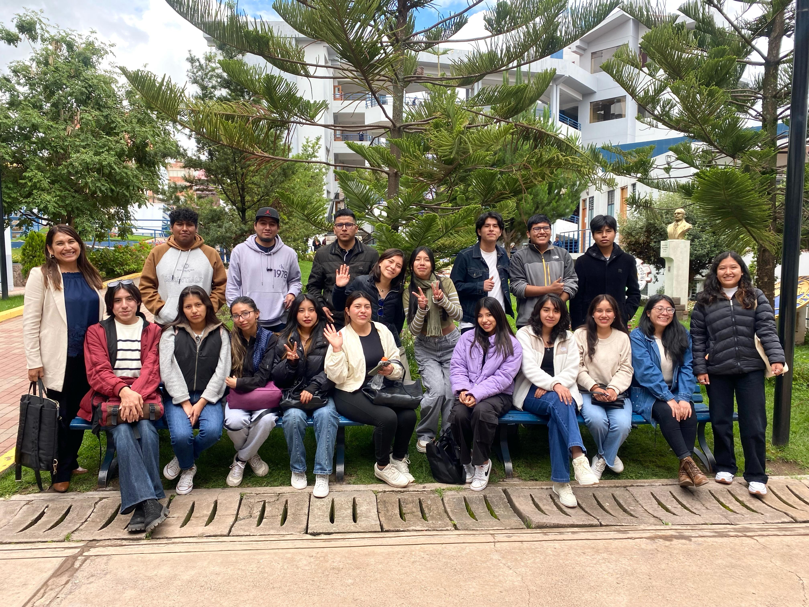

Nuestra Trayectoria
Desde 2017, el CIIG ha transformado la vida académica de cientos de estudiantes andinos, organizando congresos internacionales y mentorías para microempresarios (APROTEX). Nuestro compromiso es con la ciencia y el desarrollo sostenible.
